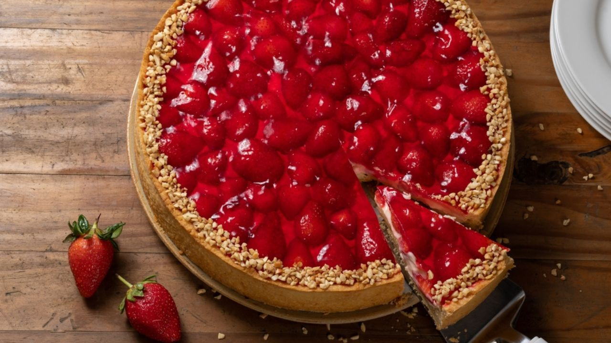
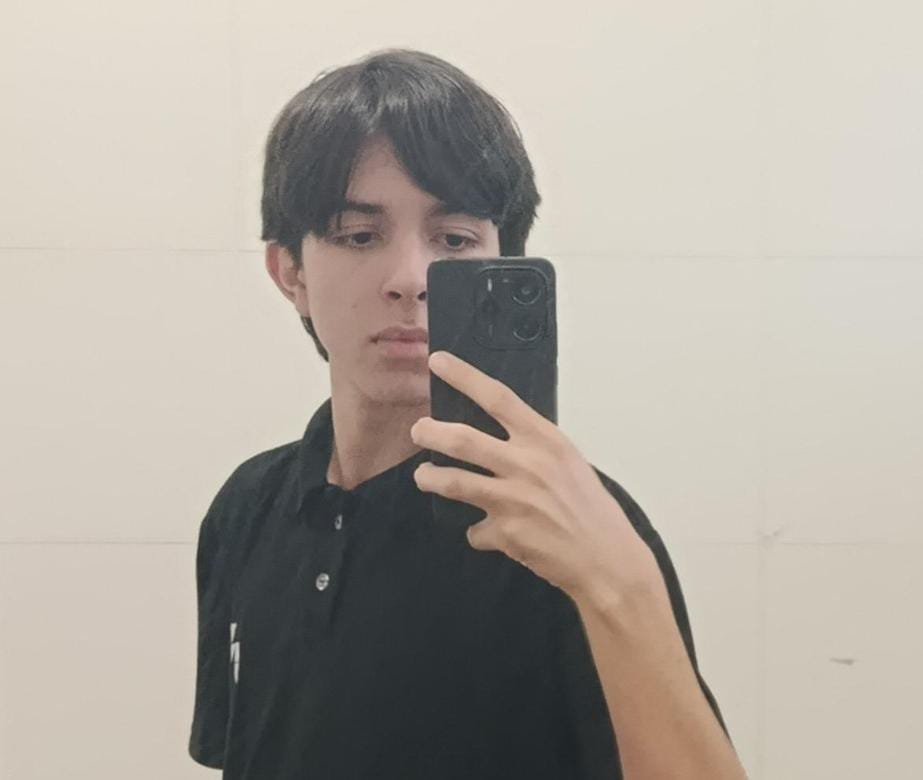
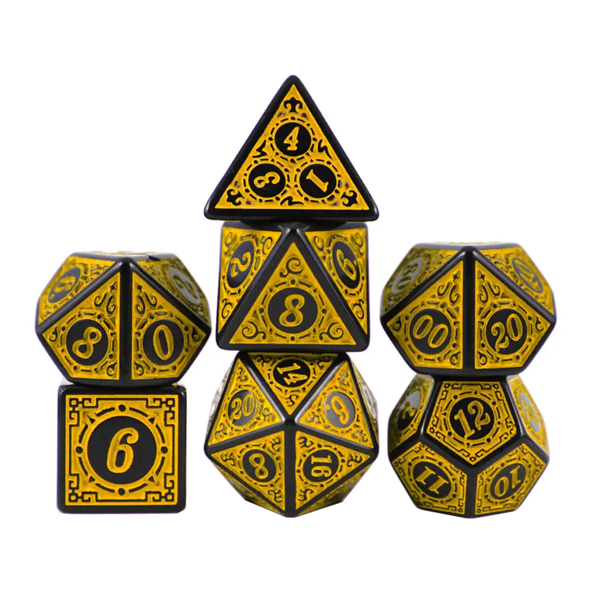
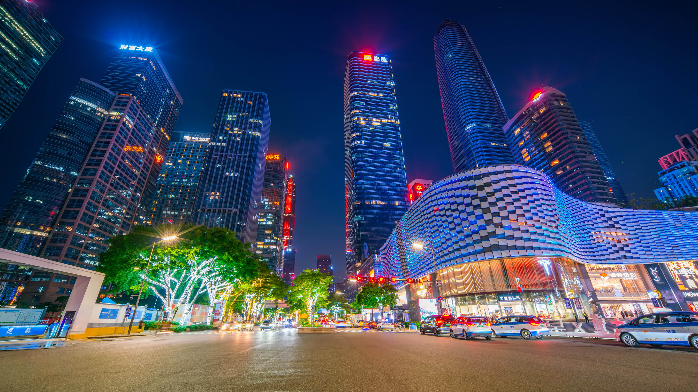
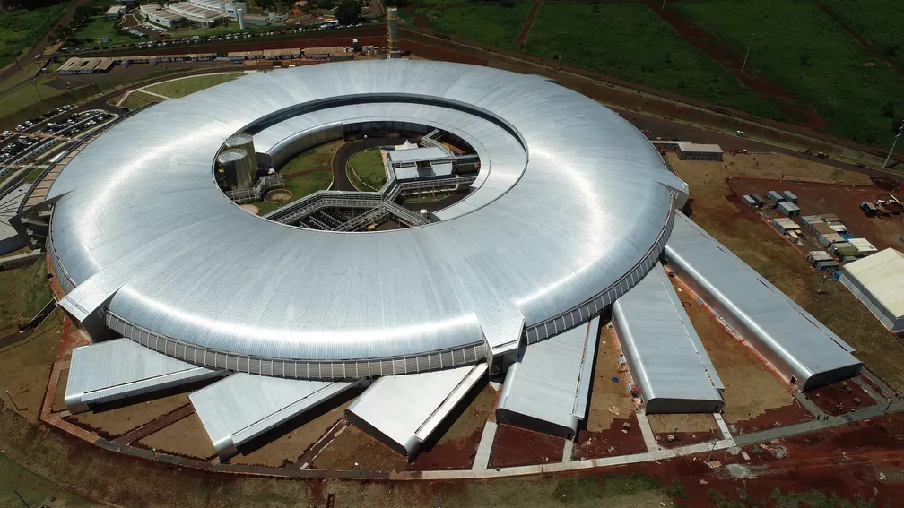

Eu amo cozinhar.
Cozinhei tortas, bolos e salgadinhos,
só nesse mês.


Cozinhei tortas, bolos e salgadinhos,
só nesse mês.


É um complexo de águas minerais, com fontes de água quente e fria, piscinas, parques e muita natureza. Um lugar ótimo para relaxar e aproveitar o dia.

Um dos maiores parques temáticos da América Latina, com montanhas-russas, shows, áreas temáticas e muita diversão para todas as idades.

Parque de diversões em Vinhedo (SP), com atrações radicais, temáticas e para todas as idades.

Um dos maiores polos de tecnologia do mundo, referência em inovação, eletrônicos e desenvolvimento de IA. Quero conhecer a cultura, a tecnologia e o estilo de vida local.

Quero ver de perto o que sempre me fascinou: o universo. Visitar centros espaciais, museus e, quem sabe, um dia, ver a Terra do espaço.
Centro de pesquisa de referência no Brasil, com laboratórios de ponta em materiais, biotecnologia, energia e nanotecnologia.
